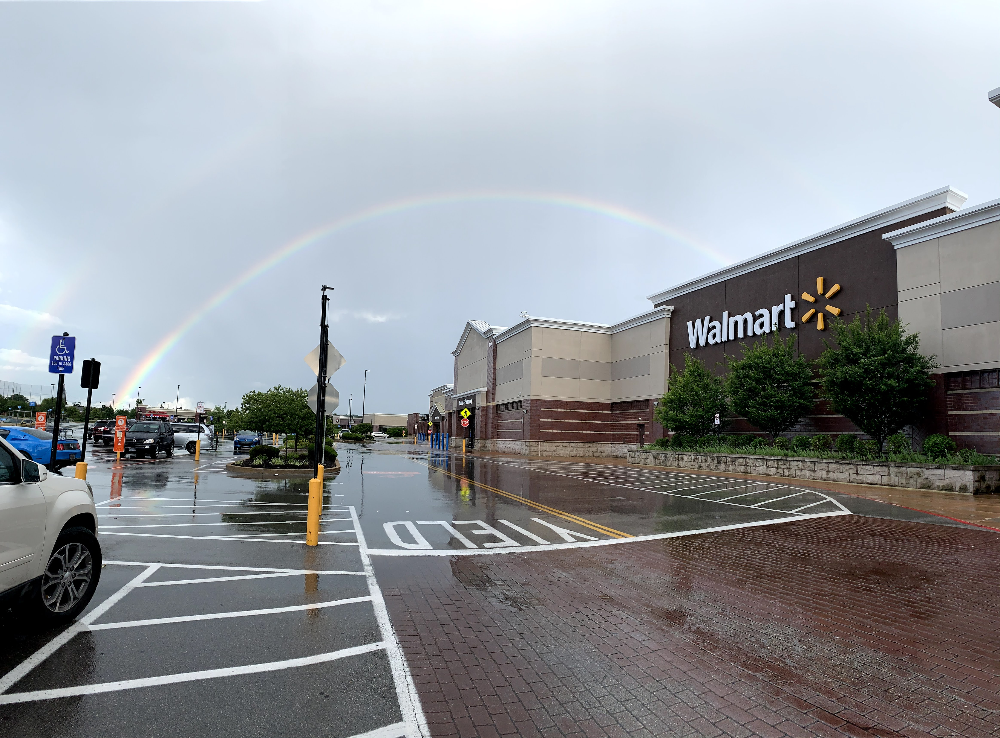
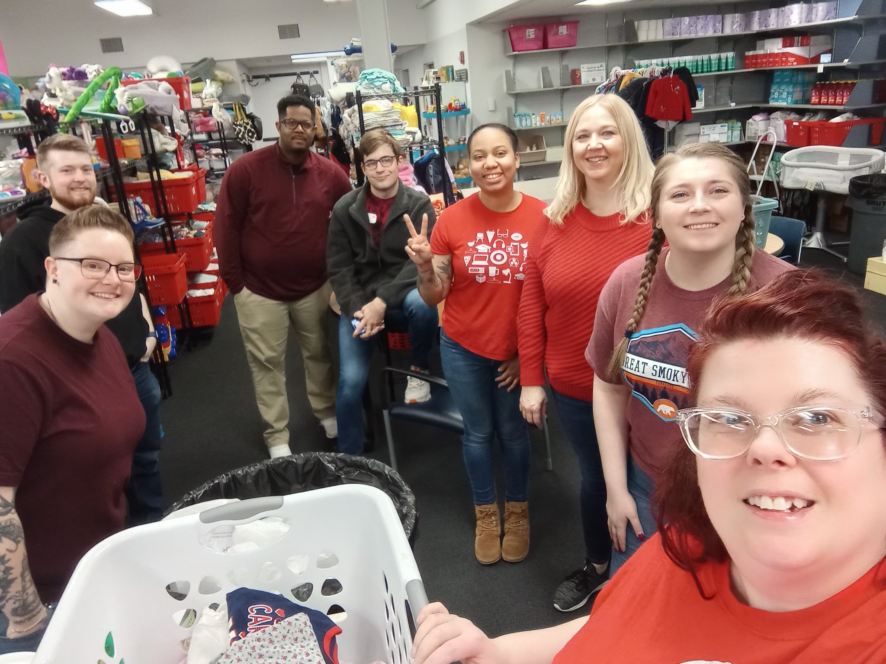
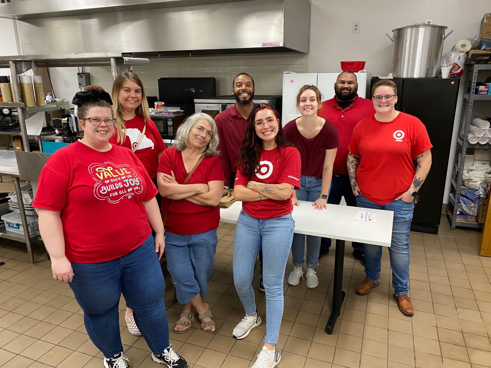

Walmart
Roles I held:
- Cashier
- Customer Service Manager
- Training & Development Department Manager
- Assistant Store Manager
- Training & Development Facilitaion Coach
I started at Walmart in 2014 when I was 18 years old. My roles taught me how to be the best leader I can be.
I also learned the ins and outs of running a business, as I managed the
operation of a $100MM+ annual revenue facility. I spent the first 8 years of my career with Walmart.
Below is one of my favorites photos that I took at my store.

Target
Roles I held:
- Executive Team Leader of Service & Engagement
I started at Target in 2021. What drew me to Target is the company's strong values around diversity, equity, and inclusion, along with commitments to advance social justice.
In my current role, I lead the front of store operations along with all guest experience and online fulfillment.
Below are photos from volunteer events that I was able to participate in with Target.


What's next?
My next career goal is to break into the tech industry and land a role as a web developer.
Technology is something I have always had a passion for. About 2 years ago I realized that I am no longer
beging challenged in my roles in retail, so I wanted to make a change. I was extremely curious about
the internet, how it works, and how websites are built. I started doing research in my spare time and shortly began learning
HTML and CSS on my own, with the help of the internet. I was able to make static websites and make them look
exactly how I wanted. Then, I was hooked! Fast forward a year, and I am exactly where I need to be to
make the next jump in my career.